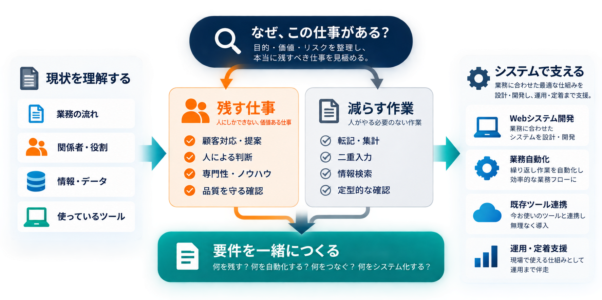
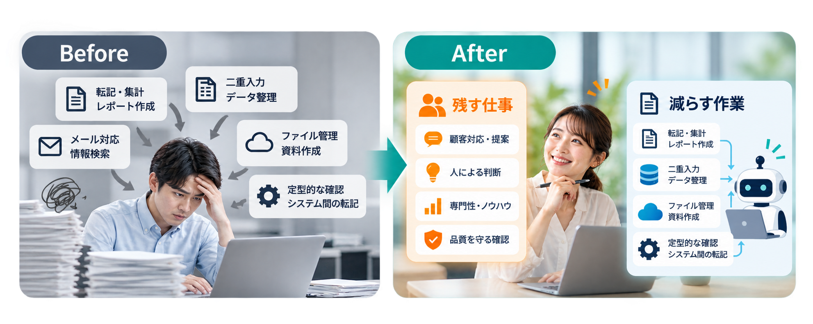

Before
入力 → 転記 → 確認 → 集計 → 再入力 → 報告
ツールを増やすのではなく、仕事を減らす。
今の業務を、そのままシステム化しません。その会社ならではの大切な仕事は残し、人がやらなくてもよい作業を減らす。業務を理解したうえで、本当に必要な仕組みを設計・開発します。
要件書は不要です。今の仕事で何が起きているかを整理するところから始めます。
Excelをシステムに置き換えたり、SaaSやローコード・ノーコードツールを導入したりしても、仕事の流れそのものが変わっていなければ、業務負担は思ったほど減りません。
システムとシステムの間を人がつなぎ、転記・集計・検索・確認・再入力といった作業が残っているケースもあります。大切なのは、ツールを導入したかではなく、実際に人の仕事が減ったかです。
今ある仕事をそのままデジタルに置き換えるだけでは、転記も、確認も、二重入力も、そのまま仕組みの中に残ります。業務を変えるべきところと、変えてはいけないところを見極めることが、システムを考える前に必要です。 だから、まず「仕事そのもの」を見ます。

業務を見直すといっても、その会社ならではの仕事まで変えることが目的ではありません。お客様との接し方、現場で培われた専門的な判断、品質を守るための確認など、事業の価値につながっている仕事は残すべきだと考えています。
一方で、転記、集計、二重入力、情報を探す作業、定型的な確認など、人がやらなくてもよい仕事は減らせます。atLIBは、まず実際の業務を理解し、「残す仕事」と「減らす作業」を整理してから、必要な仕組みと要件を一緒につくります。
「既存ツールを使う方が安い」「自動化なら簡単」「個別開発は高い」とは限りません。 複数のサービスを連携することで構成が複雑になったり、利用人数や追加機能によって継続コストが増えたりすることもあります。
逆に、必要な機能を絞ってWebシステムとして開発した方が、シンプルで運用しやすい場合もあります。atLIBは特定の方法を前提にせず、業務への適合性、実装・接続の負荷、初期費用と継続費用、保守性、将来の変更まで考えて、合理的な方法を選びます。
AIを利用する場合も考え方は同じです。AIを導入すること自体を目的にはせず、情報整理、検索、要約、下書きなど、業務を支援する用途として必要な場所に組み込みます。AIに任せるのではなく、AIを活かす。 重要な判断や承認はAIに委ねず、人が責任を持つ設計とします。
価値ある仕事は人に残し、人がやらなくてもよい作業を仕組みに任せる。探す、転記する、集計する、確認を待つ。日々積み重なるこうした作業を減らし、本来の仕事に時間を使える状態を目指します。

入力 → 転記 → 確認 → 集計 → 再入力 → 報告
価値ある仕事は人に残す。
人がやらなくてもよい繰り返し作業を仕組みに任せる。
「何を作ってほしいか」を聞くだけでは、仕事を減らせる仕組みにはなりません。現在の業務を理解し、減らせる作業を見つけ、必要な要件を一緒につくったうえで実装します。さらに、納品することをゴールにせず、現場で使い始められる状態まで導入・定着を支援します。
仕事の流れ、使っているツール、情報の持ち方、担当ごとの作業を確認します。
重複、転記、確認待ち、集計、属人化などを整理します。
何を残し、何を減らし、何を仕組みにするかを整理し、必要な要件を一緒に設計します。
UI・システム設計から開発、クラウド環境の構築まで、実際に動く仕組みとして形にします。
初期設定、データ移行、利用者への説明など、現場で使い始めるために必要な導入・定着を支援します。
専門知識は必要ありません。普段の仕事の進め方について答えると、仕事の流れ、情報の持ち方、判断や確認、人への依存、業務拡大への対応、現在のツールによる制約という6つの観点から、改善余地を整理します。
特定のWebシステム、AI、SaaSを自動でおすすめする診断ではありません。今、何が確認できていて、何がまだ分からないのかを分け、次に考えるべきことを整理する入口です。
はい。既存ツールを活かした改善、連携、自動化、必要な部分だけのWebシステム開発を含めて検討します。移行や全面刷新を前提にはしません。
問題ありません。今の業務を確認し、減らせる仕事と必要な仕組みを整理したうえで、実装範囲を考えます。
いいえ。業務理解・要件整理だけで終わらず、必要なWebシステム開発・自動化・導入まで実装します。
いいえ。使い続ける方が合理的な環境は活かします。再設計、連携、自動化、個別開発を必要に応じて組み合わせます。
情報整理、要約、下書き、検索、提案など、人の業務を支援する用途として検討できます。重要な判断や承認をAIへ委ねる設計は行いません。